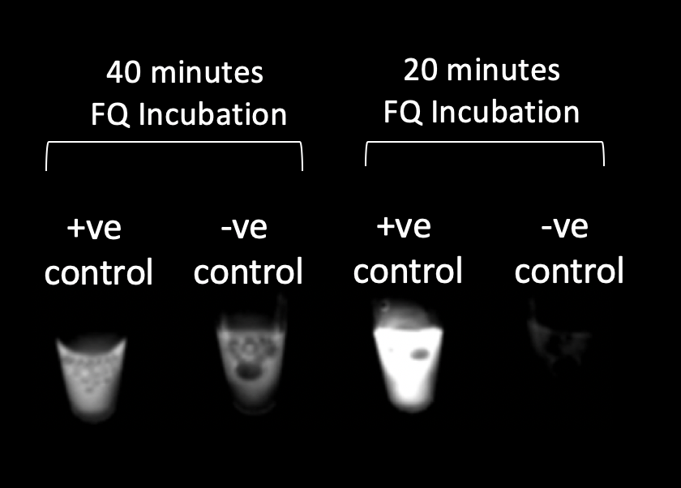

TITLE FOR THIS PAGE BLA BLA
General FQ Concentration optimization

HbcAg RPA-CRISPR with 2.5μl FQ reporter under UV light
- FQ reporter concentration should be ideally optimized between 10μM and 1μM
- Since negative control. fluorescence was observed in 10μM, lower volume or concentration of FQ reporter should be added to the reaction.
More specific FQ Concentration optimization
HbcAg RPA-CRISPR with FQ reporter under UV light
- RPA samples with 3.5 μM FQ reporter has better contrast between positive and negative control.
Incubation Time optimization

HbcAg RPA-CRISPR with 3.5μM FQ reporter under blue light
- Higher contrast for 20 minutes incubation of FQ quencher was observed compared to 40 minutes incubation
FQ Concentration optimization with 20 minutes incubation

HbcAg RPA-CRISPR with FQ reporter under blue light
- Higher contrast was observed for 2.5μM FQ concentration than 3.5μM
More diluted FQ Concentration optimization
HbcAg RPA-CRISPR with FQ reporter under blue light
- Threshold for FQ concentration is 500nM.